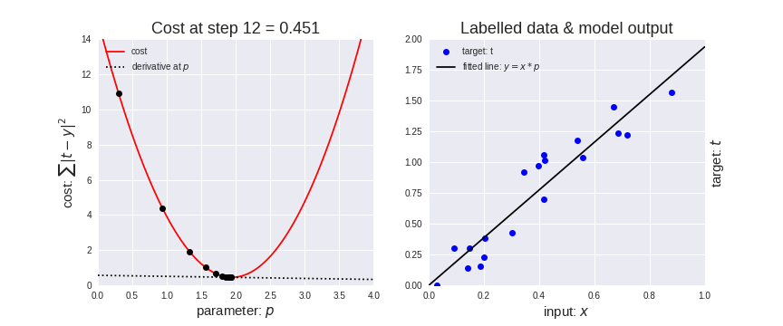

2.7. Terminologies Part-2
Contents
2.7. Terminologies Part-2#
Update law#
A short summary on gradient descent to help us better understand the terms introduced in the further sections.
Gradient descent (GD) is an
iterative first-order optimisation algorithmused to find a local minimum/maximum of a given function. This method is commonly used in machine learning (ML) and deep learning(DL) to minimise a cost/loss function.
It iteratively calculates the next value of a variable (\(p_{n+1}\)) using gradient of that variable (\(\frac{\partial J}{\partial p_n}\)) at the current iteration, scales it (by a learning rate, \(\eta\)) and subtracts obtained value from the current position (also called as taking a step). It subtracts the value because we want to minimise the function (to maximise it would be adding). This process can be written as:
There’s an important parameter \(\eta\) which scales the gradient and thus controls the step size. In machine and deep learning, it is called learning rate and have a strong influence on performance.

As you can see on the left half of the above gif (source), initially the steps are bigger that means the gradient is higher and as the point goes down the gradient becomes more smaller (until it reaches zero which means our function is now minimised) and therefore we find the shorter size of steps.
Also, we see that the Cost Function is decreasing or the cost is decreasing which means we are making more accurate predictions.
Epochs#
One Epoch is when an ENTIRE dataset is passed forward and backward through the neural network only ONCE.
Since one epoch is too big to feed to the computer at once we divide it in several smaller batches. Generally, we train our network on more than one epoch.
Batch Size#
Since we should not pass the entire dataset (big datasets) into the neural net at once, so we divide dataset into Number of Batches.
Consider a simple example:
Suppose we have \(m=6\) samples (or rows) and 3 features (or columns, \(d=3\)) in our dataset \(X\). Suppose, the batch size \(B = 2\) is given to us.
X = [[8, 3, 5],
[1, 9, 9],
[2, 1, 0],
[2, 6, 9],
[6, 8, 2],
[9, 7, 6]]
Then we can divide \(X\) into batches of size (\(B=2\)) as follows (3 batches, say \(X_1\), \(X_2\) and \(X_3\) will be formed each of size 2):
X1 = [[8, 3, 5],
[1, 9, 9]]
X2 = [[2, 1, 0],
[2, 6, 9]]
X3 = [[6, 8, 2],
[9, 7, 6]]
Now suppose that instead of \(m=6\) samples, we have \(m=7\) samples:
X = [[8, 3, 5],
[1, 9, 9],
[2, 1, 0],
[2, 6, 9],
[6, 8, 2],
[9, 7, 6],
[6, 3, 7]]
Then we can divide \(X\) into batches of size (\(B=2\)) as follows (4 batches, say \(X_1\), \(X_2\), \(X_3\) and \(X_4\) will be formed each of size 2 except the last one):
X1 = [[8, 3, 5],
[1, 9, 9]]
X2 = [[2, 1, 0],
[2, 6, 9]]
X3 = [[6, 8, 2],
[9, 7, 6]]
X4 = [[6, 3, 7]]
This splitting into batches can be sequential (as shown in the above case, or it can be random as well; with or without replacement).
So, number of batches (\(N_b\)) formed is:
where \(\lceil x \rceil\) is the ceiling function of \(x\) that takes a real number \(x\) as an input and returns the least integer greater than or equal to \(x\).
Iterations#
The number of batches \(N_b\) is equal to number of iterations for one epoch because in one epoch, we will be training that many batches.
As evident from the above example, say for \(m=7\), we have 4 batches, \(X_1\), \(X_2\), \(X_3\) and \(X_4\) which together constitute as \(X\). So, training one entire epoch (on entire \(X\)) is same as training \(X_1\), \(X_2\), \(X_3\) and \(X_4\) (that is in one epoch we will be training 4 times which is same as \(N_b\)).
So, for \(E\) number of epochs, we will have \(N_bE\) iterations.
Parameters vs Hyperparameters#
Parameters, are the elements that we learn through the iterations and on which we apply backpropagation and update law: like weights and biases \(W\) and \(b\).
Hyperparameters are all the other variables we define in our algorithm which can be tunned (unfortunaltely most of the times, manually) in order to improve the neural network such as:
Learning rate \(\eta\)
Batch size \(B\)
Number of epochs \(E\)
Choice of activation functions (link to previous chapter)
Number of layers \(L\)
Number of neurons (link to previous chapter) in each layer